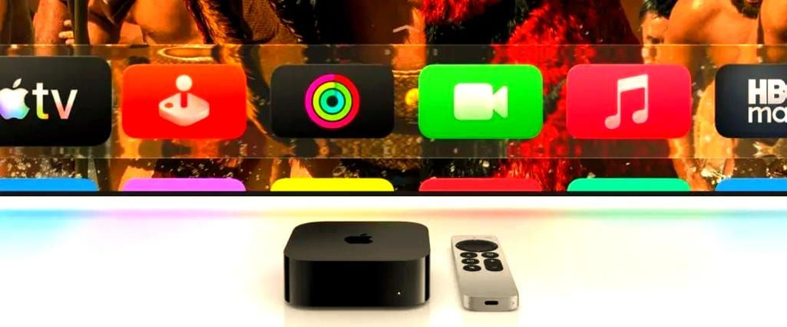

Apple TV 4K（2022）

苹果第三代 Apple TV 4K，A15 芯片性能充沛，tvOS 与杜比视界/全景声体验精致流畅，兼任 HomeKit 家庭中枢，是苹果生态用户的客厅标配，做工与软件体验都精致。
客观评测
第三代 Apple TV 4K 搭载 A15 Bionic 与 4GB 内存，提供 64GB 与 128GB 两种存储版本。实测 tvOS 流畅度业界领先，4K Dolby Vision 与 Dolby Atmos 播放完整，HDMI 2.1 输出支持高帧率内容，第二代 Siri Remote 操控手感出色。AirPlay 投屏与 HomeKit 中枢功能完善，短板在国内内容生态与偏高的售价。
主观点评
它给客厅带来的是一种「精致感」：滑动菜单如丝般顺滑，海报墙里的电影画质干净利落，投屏 iPhone 画面零延迟。在苹果生态里它还是智能家居的中枢，回家灯自动亮起的体验很上瘾。国内想看的内容得费点心思装 App，但只要你看的是自家片库或海外流媒体，它就是体验最好的那台盒子。
优点与不足
- A15 性能充沛，系统动画丝滑数年不卡
- 杜比视界/全景声支持完整，画质音质在线
- AirPlay 与家庭中枢，苹果生态体验闭环
- 国内流媒体 App 适配与内容受限
- 价格明显高于安卓盒子
- 无 USB 接口，本地播放依赖网络
参数规格
| 芯片 | Apple A15 Bionic |
|---|---|
| 内存 | 4GB |
| 存储 | 64GB（Wi-Fi 版）/ 128GB（网线版） |
| 系统 | tvOS，App Store 应用生态 |
| 解码 | 4K Dolby Vision、HDR10+、Dolby Atmos、HFR 高帧率 |
| 连接 | Wi-Fi 6、蓝牙 5.0、千兆网口（128GB 版）、HDMI 2.1 |
| 遥控 | 第二代 Siri Remote（USB-C 充电） |
| 生态 | AirPlay 投屏、HomeKit/Thread 家庭中枢 |
| 游戏 | 支持 Apple Arcade 与手柄 |
| 尺寸 | 约 93 × 93 × 31 mm |